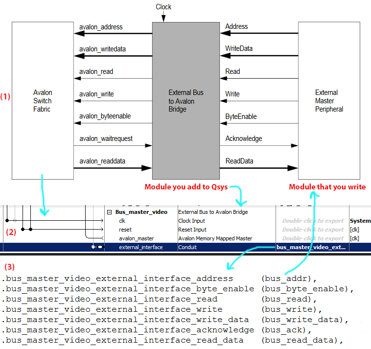

Using Qsys
with DE1-SoC
Cornell ece5760
Qsys Overview
Qsys is a bus design tool integrated with Quartus Prime:
- Qsys allows connections to the Intel/Altera Avalon bus and provides bridges to the HPS via AXI bus.
- Qsys hides details of bus width, timing, arbitration, and domain bridges to make design easier.
- We are going to use Qsys as a memory-mapped, or address-mapped, system between the HPS, Altera-supplied IP, and student written Bus Masters.
- Qsys designs can be heirarchical. For instance, the University Program Computer bus can be opened in Qsys, and so can many of the components that make up the Computer.
The VGA_subsystem is one component of the Computer that can be opened in Qsys to expose internal bus structure.
- The full description of Qsys is in Chapter 5 of a giant Quartus Hanbook Vol 1.
- A Qsys master can generate data, addresses and bus requests.
- A Qsys slave responds to bus requests aimed at its address to send or receive data.
- The actual bus timing is not simple, so bus acknowlegment handshaking must be done in every device connected to the bus. For prewritten modules (e.g. video subsystem or PIO port) handshaking is already done. When you write a bus-master you must do the handshaking.
- Memory-mapped transactions between masters and slaves are encapsulated in packets and transmitted on a network that carries the packets between masters and slaves. The command network transports read and write command packets from master interfaces to slave interfaces. The response network transports response packets from slave interfaces to master interfaces (1).
- It is possible to make your own modules compatable with Qsys.
The process is describled in a tutorial_16.0, tutorial_15.0 (code).
The memory map for the HPS defines two large blocks of memory:
-- one block for the h2f_axi_master at ARM base address 0xC0000000 (see table 1-2 in HPS intro)
-- one block for the h2f_lw_axi_master at ARM base address 0xFF200000
These are coded in the address header file. The file also has specific peripheral offsets which must match the Qsys assignments.
Specific Avalon devices are then designated as offsets from these base addresses.
--
The offsets are specified in Qsys in the address Base column.
--
Each different Avalon master (vertical connection line) has its own address offsets, independent of other masters.
--
The light weight axi master is used for relatively slow peripherials and can do around 700,000 transactions/sec.
--
The main axi master is about 10 times faster.
Qsys signals have types and widths. This allows for error checking, explicit handling of clock signals, width conversion, and more. A single component can include any number of these interfaces and can also include multiple instances of the same interface type. Details are explained in (2).
Qsys signals are specified as:
- Clock -- For point-to-point connections of the form clock out –> clock in
- Reset -- For point-to-point connections between reset sources and reset sinks.
- Avalon MM signals -- For Avalon-MM masters and slaves that communicate using memory-mapped read and write commands. We will use mostly MM devices.
- Avalon ST signals -- Interface that supports the unidirectional flow of data, including multiplexed streams, packets, and DSP data.
- Tristate -- An interface to support connections to off-chip peripherals.
- Conduit -- You can use the conduit interface type to define a custom collection of signals that do not fit into any other interface category.
Conduits are also used to export signals to the FPGA from a Qsys component to the top-level Verilog design (see below).
Qsys can use a conduit to generate specification for connection directly to the FPGA fabric. When the generate command is given in Qsys, Verilog is produced, including a module which is inserted into the top-level design module. For example, the signals marked as exported in Qsys for the Video subsystem show up as connections in the generated module. A small part of the generated module shows the exported video connnections which attach to the FPGA fabric.
Each Qsys bus connection has a settable arbitration priority. Right-click anywhere on the System Contents tab, and click Show Arbitration Shares. The connection panel displays the arbitration priority of each master for each slave to which it is connected. By default, Qsys assigns arbitration priority 1 for each connected master-slave pair. The highest numeric value receives the highest priority. When multiple masters request access to a fixed priority arbitrated slave, the arbiter gives the master with the highest priority first access to the slave. See Quartus Handbook page 7-18 for more details.
Qsys Modules
There are dozens of predefined modules for Qsys. The menu in the upper-left corner shows the installed modules. Many of the modules are described in the Embedded IP Users Guide. Right-clicking on the module name in the menu will give options for inserting into the design and also for a link to documentation. Sometimes the documentation link is the datasheet, sometimes it is in the Component Folder. For instance, a parallel I/O port (PIO) which provides data from the HPS to the FPGA is an output! To get the PIO datasheet, right-click the module name and in the pop-up menu, select details>datasheet. Some other modules require that you follow the path details>open_component_folder to get the datasheet.
Some of the modules are listed here.
- Cyclone5 Hard Processor -- ARMv7 HPS -- Introduction, reference manual
- Parallel Port-- Parallel I/O port -- Embedded IP Users Guide chapter 12 -- University program PIO
Each PIO core can provide up to 32 I/O port lines. An output is a connection from the HPS to the FPGA.
The HPS or other bus-master controls the PIO ports by reading and writing the register-mapped Avalon-MM interface. Under control of the host, the PIO core captures data on its inputs and drives data to its outputs. When the PIO ports are connected directly to I/O pins, the host can tristate the pins by writing control registers in the PIO core.
- UART -- Universal Asynch receive/transmit serial -- Embedded IP Users Guide chapter 8 -- University Program UART
The UART core implements communication via serial character streams between an bus-master on an Altera FPGA and an external device. The core implements the RS-232 protocol timing, and provides adjustable baud rate, parity, stop, and data bits, and optional RTS/CTS flow control signals. The feature set is configurable, allowing designers to implement just the necessary functionality for a given system. The core provides an Avalon Memory-Mapped (Avalon-MM) slave interface that allows Avalon-MM master peripherals to communicate with the core simply by reading and writing control and data registers.
- SPI -- Serial Peripherial Interface -- Embedded IP Users Guide chapter 10
SPI is an industry-standard serial protocol commonly used in embedded systems to connect microprocessors to a variety of off-chip sensor, conversion, memory, and control devices. The SPI core implements the SPI protocol and provides an Avalon Memory-Mapped (Avalon- MM) interface on the back end. The SPI core can implement either the master or slave protocol. When configured as a master, the SPI core can control up to 32 independent SPI slaves. The width of the receive and transmit registers are configurable between 1 and 32 bits. The SPI core provides an interrupt output that can flag an interrupt whenever a transfer completes.
- Memory -- RAM, FIFO in M10K blocks -- Embedded IP Users Guide chapter 16
The on-chip FIFO memory core buffers data and provides flow control in an Qsys Builder system. The core can operate with a single clock or with separate clocks for the input and output ports. it does not support burst read or write.
- DSP --
- CIC -- cascaded integrator-comb filter
- FIR -- finite impulse response (I wrote IIR and DDS-NCO)
- FFT
- NCO
- 2D-FIR
- University Program -- collection of modules aimed specifically at DE1-SoC board
Qsys Video examples
Avalon Bus-master
The Bus-master we are using is more formally known as External Bus to Avalon Bridge (EBAB).
The video bus-master on the Bus-master page can be summarized with the three-part image below which is:
1. a schematic of the generic EBAB;
2. what the EBAB looks like in Qsys;
3. the interface verilog that Qsys generates for connection to your actual controller.
Your actual controller is written in Verilog and will consist of at least two states. The first state generates the bus_addr (pixel location), bus_byte_enable (one byte write), bus_write (write strobe), and bus_write_data (pixel color), then sets the state machine to the second state. The second state waits for the bus_ack, then sets the state machine back to the first state. This particular bus-master does not read data from the bus. The audio bus-master on the DSP page reads and writes data. When you put a bus-master onto the bus, you need to specify the data width and address range in a dialog box, which you get by double-clicking the module name on the Qsys interface.

The full Qsys layout for the video bus-master shows the other connections needed for operation. The clock and reset input are connected to system clock/reset outputs. The module avalon_master is connected to the memory which holds the image, because the addresses we are generating are aimed at video memory. The on-chip RAM is dual ported, with the EBAB connected to the s1 port, and the s2 port connected to video controller. The EBAB master bus is also attached to SDRAM, but I am not sure why. The display is incomplete if this is left disconnected.
References
(1) Qsys Interconnect
(2) Avalon Interface Specs
(3) External bus to Avalon Bridge
(4) Embedded Peripheral IP User Guide
Copyright Cornell University
February 1, 2019
{kind=link}
{kind=link}
{kind=link}
{kind=link}
{kind=link}
{kind=link}
{kind=link}
{kind=link}
{kind=link}
{kind=link}
{kind=link}
{kind=link}
{kind=link}
{kind=link}
{kind=link}
{kind=link}